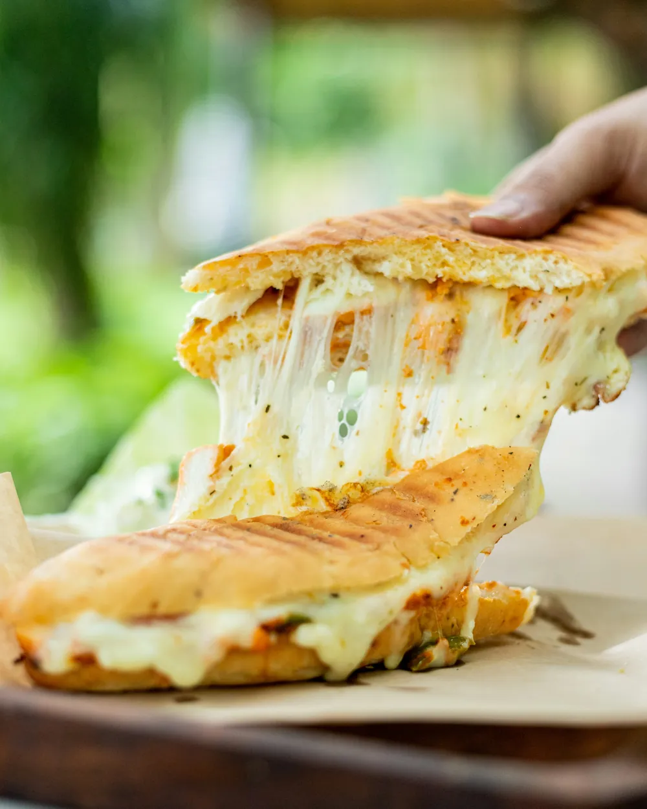
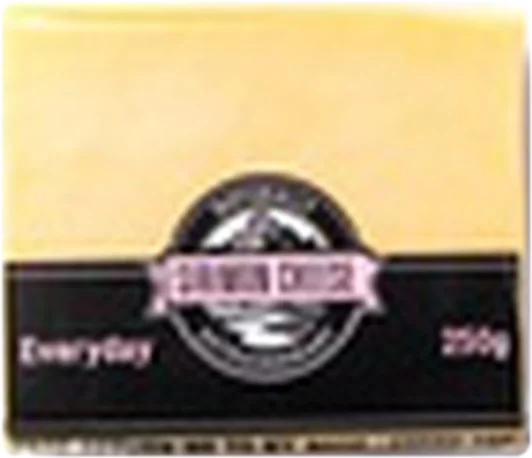
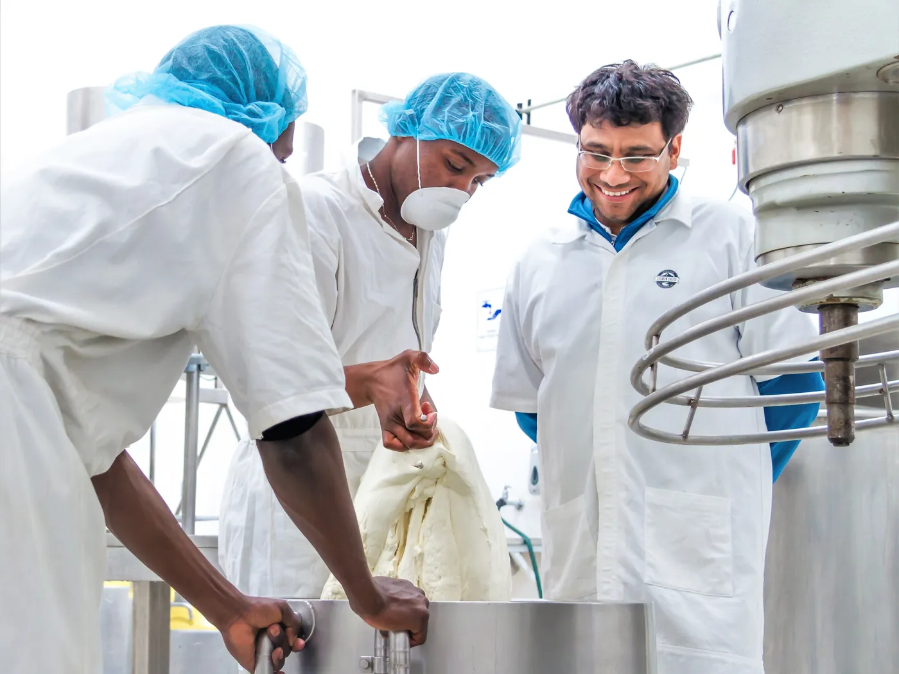
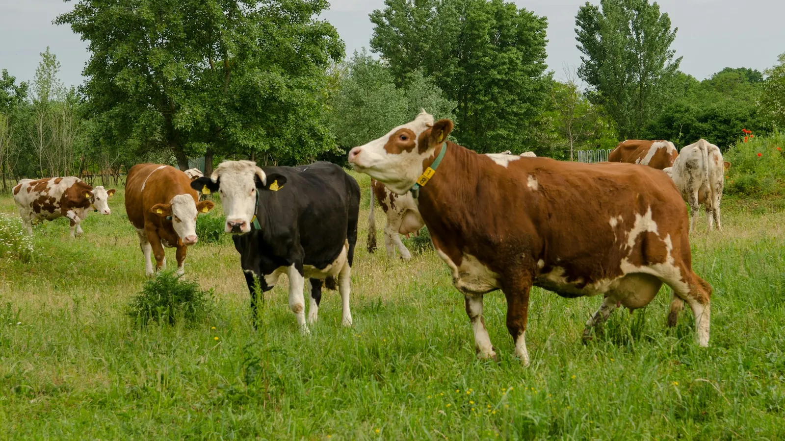
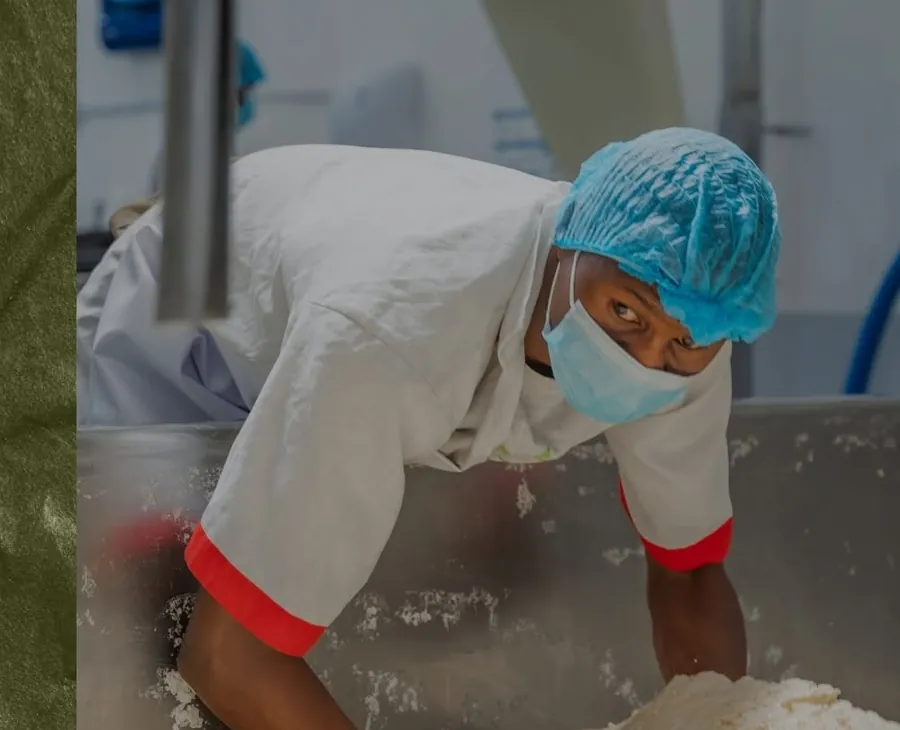
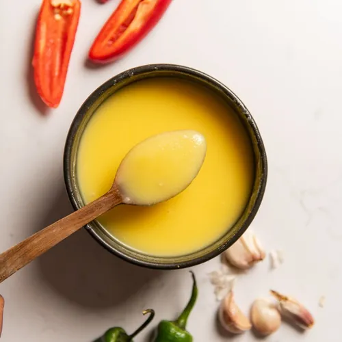
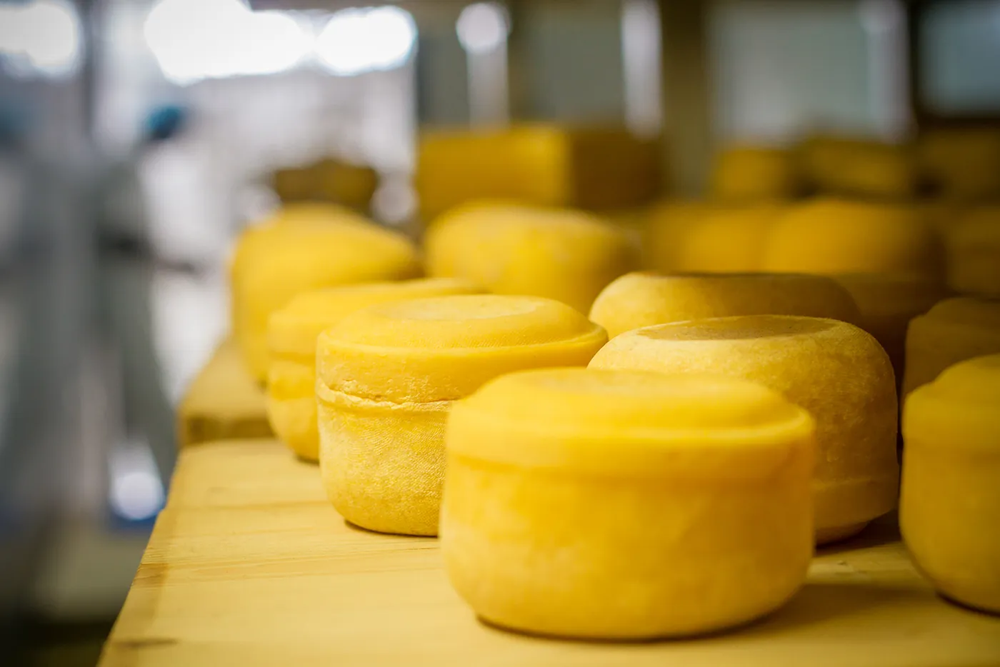
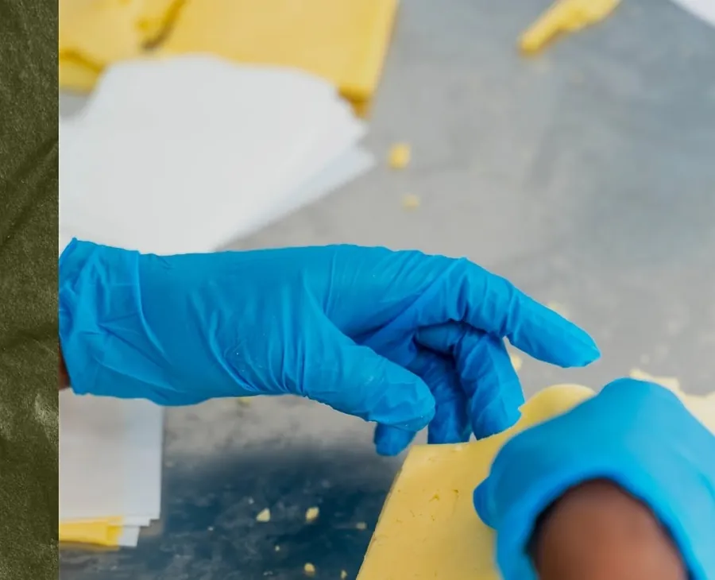
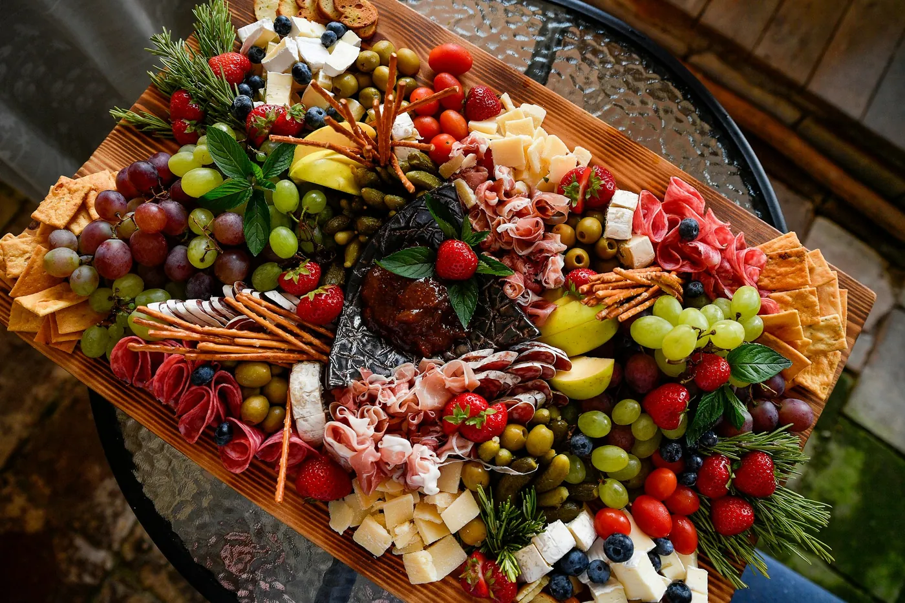

Sirimon Cheese, naturally extraordinary cheese from Laikipia, Kenya
Naturally extraordinary cheese, crafted with heart at the foot of Mt Kenya. Stretchy, squeaky, crumbly, creamy, and always ready to melt.
- Everyday
- Mozzarella
- Cheddar
- Paneer
- Halloumi
- Feta
Sirimon Everyday · the melt test · it melts very nicely
Four textures · one studio
Stretchy.Mozzarella Squeaky.Halloumi Crumbly.Feta Creamy.Labneh
Small batches from the Sirimon studio, at the foot of Mt Kenya. Every wheel and block is tested for colour, texture and taste before it leaves.
The range · 01 · eleven families
What we’re making.
Each cheese wears its own colour on the pack. Point at one to taste it, tap to see every size at today’s shop price.

01 / Everyday Cheese
The melt test · 02
Turn up
the heat.
Five ways Sirimon behaves when it meets a pan, a grill or a hot oven. Keep scrolling.
Seven ways to say cheese.
Melt it, stretch it, grill it, grate it, crumble it, dip it, board it. Tap a way to see the cheeses that do it best.
Cook with Sirimon · 03
What’s for dinner tonight?
Recipes from Kenyan cooks and chefs who cook with Sirimon: Ngina Kabucho, Krishna Mehta, Chef Raphael, Nikki Lulu and more. Pick a mood and shuffle.
The Sirimon way · 04
The process is sacred.
At the foot of Mt Kenya in Laikipia, the meandering Sirimon River gives us pure, untainted water. Together with local farmers we nurture the pastures and care for the cows that give us the rich, creamy milk our cheese is known for.
The finest starter cultures, natural rennet and whole milk. Exact measurements, temperatures and times. No genetically modified, synthetic or artificial ingredients, ever.


01Milk collection & testing
Fresh milk from local smallholder families, collected daily and tested in our lab before a drop goes in.

02Pasteurisation at 73°C
Exact temperatures and times, monitored so nothing is left to chance.

03Cream separation
The cream we lift off becomes Sirimon Ghee. Nothing is wasted.

04Ageing, up to 8 months
Curds get time to develop naturally. Never rushed.

05Final quality checks
Every batch is hand-tested for colour, texture and taste.
- Farming families
- 1,200+
- Years of Sirimon
- 10
- Pasteurised at
- 73°C
- Vegetarian
- 100%
- Certified
- HACCP · Halal · ISO
Real cheese takes human hands.
Most of the team live within a short walk of the creamery. Drag to meet them.
Cheese for Trees · 05
Every kilo plants a forest.
For every 1 kg of cheese you buy direct from us, KES 25 goes to planting Kabage Forest in the Aberdares, with Friends of Environment Conservation Trust. It protects the pastures that feed our dairy.
Shop to impactThe cheese list · 06
Fill the fridge.
Every Sirimon cheese and jar at today’s shop prices. Delivered across Nairobi from KES 250, couriered out of town, or ready for you at a market or the studio. Send it on WhatsApp in one tap.

The Kitchen Crew · 07
Join our kitchen crew.
Simple, crowd-pleasing recipes, exclusive specials and serious cheese-loving perks. Free to join, and your members’ prices switch on across the whole site.
Pop-ups we’re at · 08
Find us at a market.
The studio, by Mt Kenya.
- Studio
- Plot No. 49, Kalalu, Laikipia East
Near Mathagiro Town, Meru - Hours
- Monday to Friday, 8am to 5pm
Saturday, 8am to 12pm · Sunday closed - Call
- 0799 755 690 Nairobi office
0700 112 888 Nanyuki office